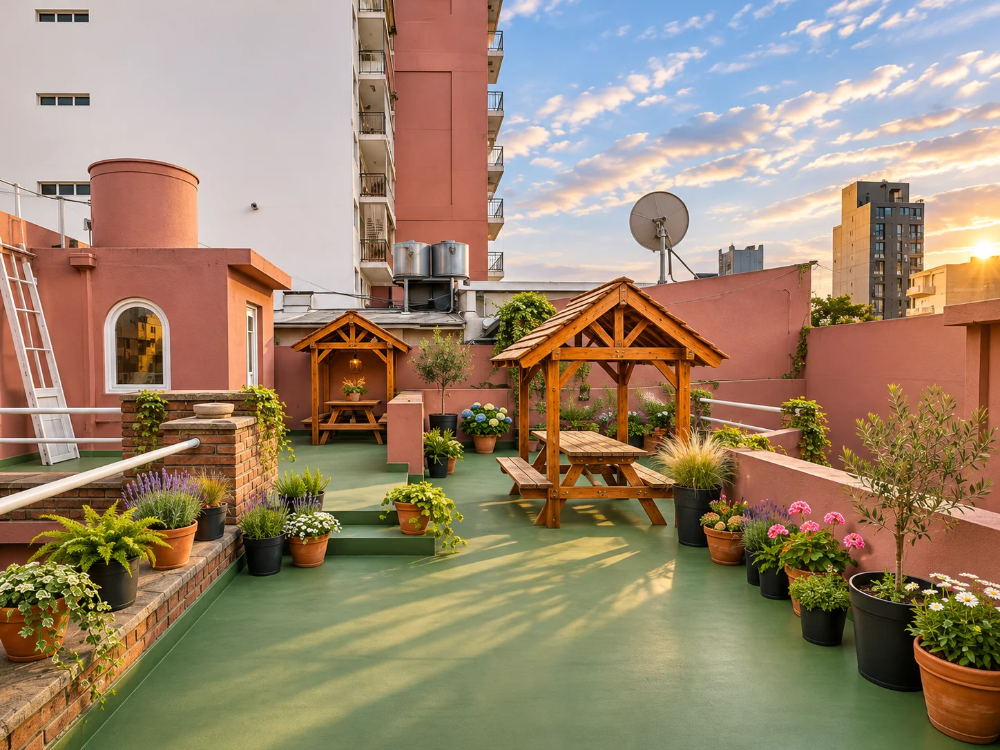
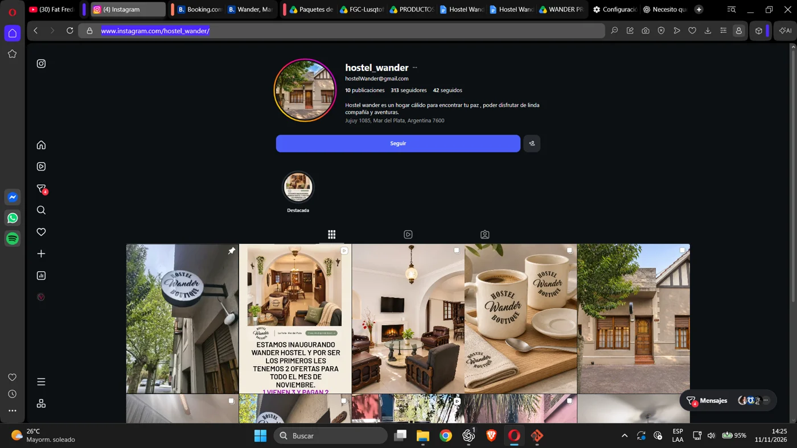
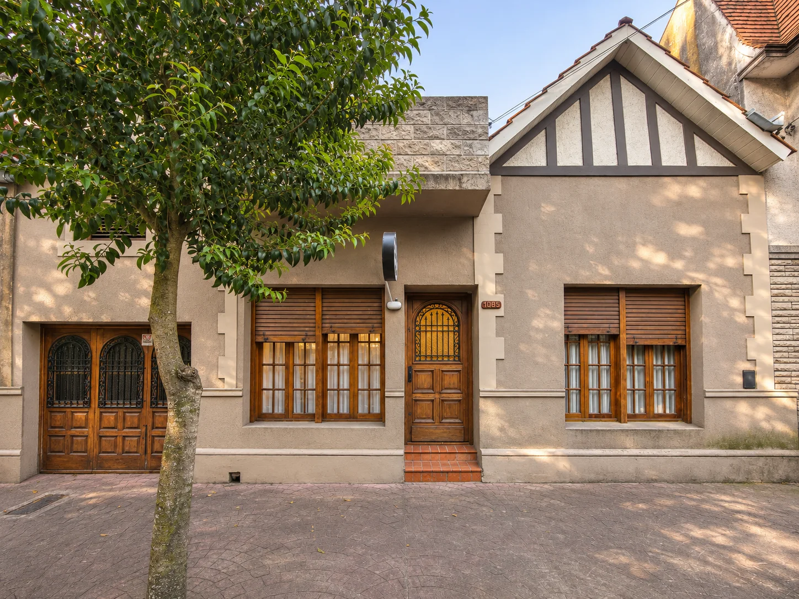
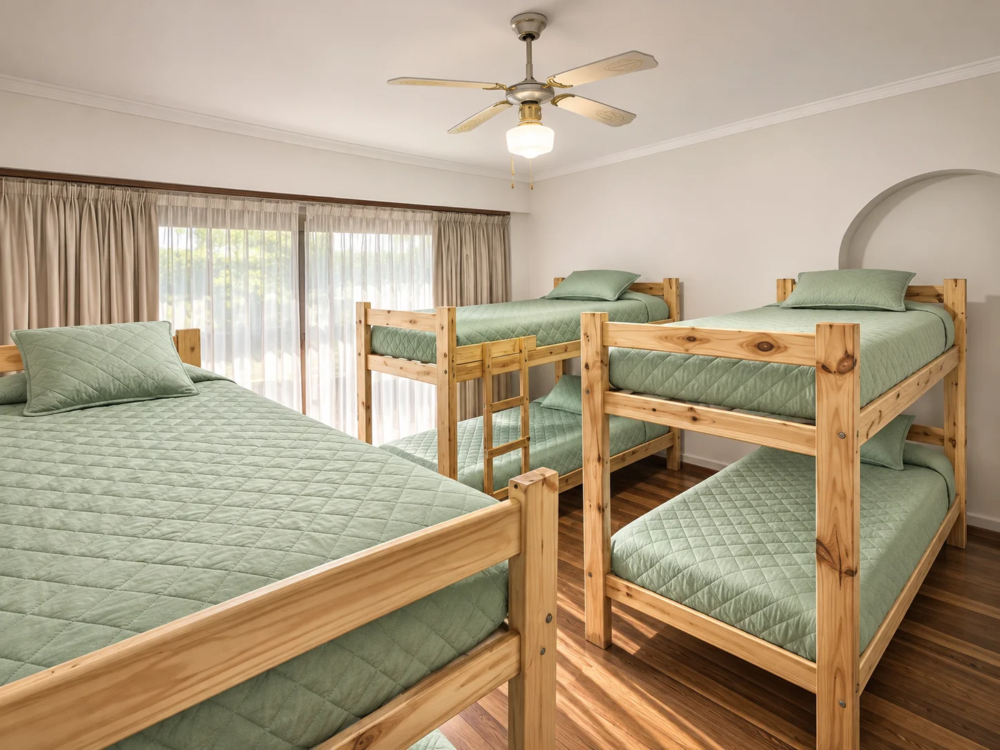
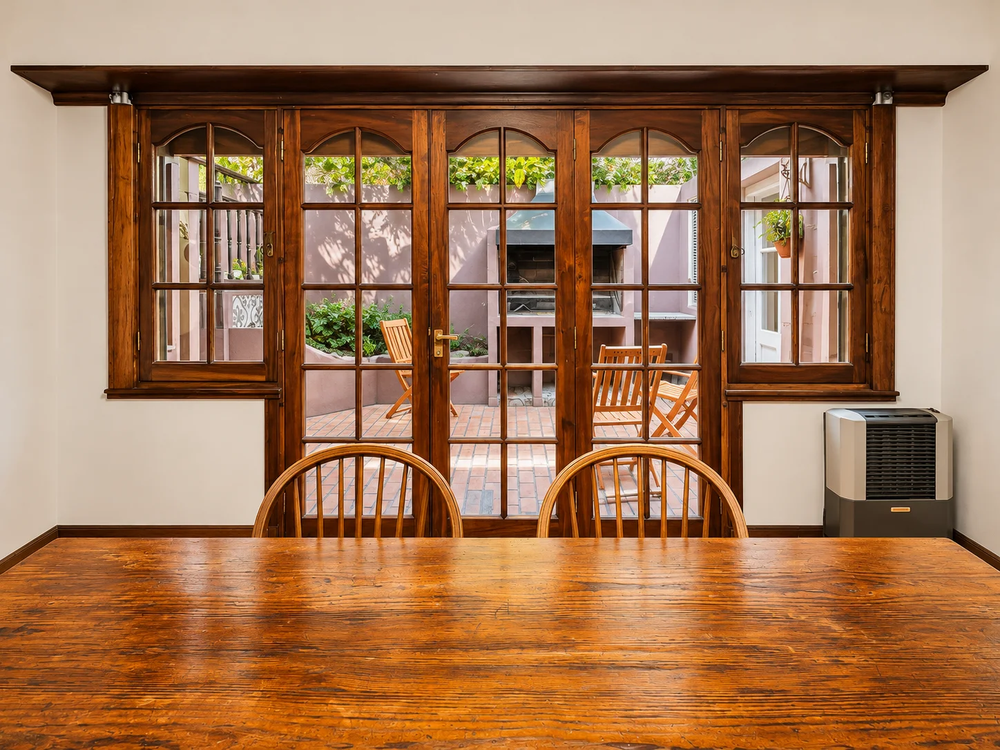

Con tu grupo
Salir del chat de “algún día vamos”. Mostrar cómo es alojarse y compartir un viaje, con reglas de convivencia claras.
PROPUESTA DIGITAL / TEMPORADA 2026—27
Una casa en Mardel. Un viaje entre amigos. Un plan que empieza con un mensaje.
Descubrí la propuesta ↓
01 / LA IDEA
Transformar Instagram, Facebook y WhatsApp Business en una experiencia coherente: te inspira, te orienta y te recibe con claridad.
Propuesta para revisión. Incluye planificación y textos; filmación, publicación y configuración de cuentas son etapas de implementación pendientes. Las imágenes entregadas no acreditan servicios ni condiciones actuales.
Salir del chat de “algún día vamos”. Mostrar cómo es alojarse y compartir un viaje, con reglas de convivencia claras.
Una bienvenida cercana, espacios comprensibles y planes de ciudad. Viajar solo sin sentir que tenés que resolver todo solo.
Recital, festival o escapada. Ayudar a organizar fechas, llegada y alojamiento sin prometer cupos ni traslados.
02 / REBRANDING DE INSTAGRAM
La casa ya aporta calidez. El cambio está en contar lo que pasa alrededor: la caminata, el mate, el plan que sale sobre la marcha y las ganas de volver.
Continuidad con la propuesta local de marca: Crimson Pro + Work Sans. La firma original se conserva; este sitio usa un rótulo tipográfico, no un logo nuevo aprobado.
En la captura del 11/11 se observa una foto de fachada como avatar, una bio general y una destacada llamada “Destacada”. Proponemos avatar con la marca legible, nombre con categoría y ciudad, bio orientada al viajero, ocho destacadas y tres publicaciones fijadas. La captura no aporta Insights ni demuestra rendimiento.

Tu próxima escapada a Mardel 🌊
Vení con amigos o por tu cuenta.
Descansá. Explorá. Compartí.
↓ Consultanos por tu estadía

Tu lugar
Acá bajás
VISTA CONCEPTUAL · SIN MÉTRICAS INVENTADAS
“¿Ya armaron el grupo para venir?”
“Guardá este plan para cuando estés en Mardel.”
“Contanos tus fechas y cuántos vienen.”
Cercano, con voseo y sin exagerar. Alternar personas, destino e instalaciones. Evitar “lujo”, “el mejor”, “a minutos” o servicios que no estén comprobados.
03 / TRES VIDEOS, TRES RAZONES PARA VENIR
Tres Reels verticales para fijar en el perfil. Un recorrido desde la ubicación hasta la forma de habitar la casa.
Son propuestas de producción, no videos renderizados. Filmar instalaciones reales en 9:16, exportar 1080 × 1920, subtitular, cuidar zonas de interfaz y usar música con derechos. El camino a la playa necesita recorrido y tiempo reales; no se inventan metros ni minutos.
Bloque 1: fachada y camino elegido por Cata, con luz suave. Bloque 2: habitaciones listas, tomas amplias y detalles honestos. Bloque 3: sala, comedor, patio y terraza al atardecer, si son accesibles a huéspedes. Personas del equipo o huéspedes solo con permiso.
Entrega sugerida: 3 Reels principales, 3 portadas y 6 recortes para Stories derivados de esos videos. Guiones y edición sujetos a revisión factual. Costos de filmación, edición y música: por cotizar.
04 / HISTORIAS DESTACADAS
Ocho entradas claras para pasar de “qué lindo lugar” a “ya sé cómo consultar”. Tocá cada portada para ver su secuencia.
Portadas propuestas en SVG editable: trazo simple, fondo lino y verde bosque. No subir testimonios, tarifas ni políticas sin confirmación. Descargar lámina editable de portadas ↗
05 / ECOSISTEMA META
Instagram inspira. Facebook da contexto. WhatsApp ordena la consulta. La persona que atiende conserva el control de la reserva.
EL DETALLE QUE CAMBIA LA IMPLEMENTACIÓN
Base propuesta: bienvenida y ausencia automáticas; respuestas rápidas insertadas por el equipo. Ruta con IA: Meta Business Agent responde si está habilitado para esa cuenta.
Al incorporar el agente, Meta desactiva los mensajes de bienvenida y ausencia. Hay que elegir y probar el flujo activo, evitando respuestas duplicadas. Elegibilidad, idioma, costo y límites de Wander: NO VERIFICADOS.
Ver documentación de WhatsApp ↗Nombre, dirección confirmada, horarios reales, tipos de alojamiento, servicios incluidos, políticas, accesibilidad y contacto humano. Fuente única fechada y responsable de actualizarla.
Puede orientar y recopilar llegada, salida, personas y preferencia. Ante cupos, precio, seña, cancelación, reclamo o duda: derivación al equipo. No confirmar reservas sin inventario y sistema verificados.
Probar desde otro número: consulta general, fechas incompletas, grupo, precio, llegada tarde, menor de edad, accesibilidad, cancelación, pedido de persona y falta de información. Comprobar derivación y evitar duplicados.
Criterio: cada caso obtiene información correcta o deriva sin inventar; el responsable recibe el caso; cualquier cotización sale de una fuente vigente. Si falla, desactivar respuestas de IA y restaurar el flujo aprobado según opciones de Meta.
Business Suite: revisar vinculación de activos, acceso del propietario, permisos mínimos, responsable de bandejas y programación. La disponibilidad de bandeja unificada y automatizaciones debe verificarse por cuenta. No se conectó ni modificó ninguna cuenta en esta propuesta.
06 / INSPIRACIÓN, CON ACENTO PROPIO
Amistat comunica experiencias sociales y viaje joven. Para Wander: mostrar encuentros simples y al equipo, si forman parte de la experiencia real.
Fuente: perfil de la empresa ↗Su web organiza actividades y orientación de barrio. Para Wander: guías guardables y planes útiles, con atención a quien llega por su cuenta.
Fuente: agenda del hostel ↗Mate, costa, cultura, comida y descanso. Más presencia humana, recorridos en primera persona y tono local. Probar esta dirección con consultas reales.
DIRECCIÓN PROPUESTAReferencias consultadas el 11/11/2026. Son patrones observados de comunicación, no un ranking ni una demostración de “lo que más convierte”. No se trasladan a Wander servicios o actividades de otros hostels.
Casa sobre el Arroyo, Villa Victoria y Torre Tanque: arquitectura, jardines y otra perspectiva de la ciudad. Reconfirmar apertura, entradas y reservas para cada fecha.
OSSE · Torre Tanque ↗Churros en Manolo como clásico; pescados y frutos de mar en el Puerto; una selección de cafés del barrio hecha por Cata. Sin alianzas ni descuentos supuestos.
Manolo · sucursales ↗Evitar sol directo entre 10 y 16 h; buscar sombra, hidratarse y usar FPS 30 o más, renovándolo cada dos horas y después del agua.
Ministerio de Salud · recomendaciones ↗07 / UN MES PARA EMPEZAR
16 de noviembre → 15 de diciembre de 2026.
3 Reels + 9 carruseles o fotos. Stories sugeridas para los 30 días, sujetas al material y la capacidad del equipo.
Tocá una fecha para ver texto, secuencia, CTA y materiales. Horario inicial de ensayo: feed 19 h, Stories 11/18 h, America/Argentina/Buenos_Aires; revisar tras dos semanas con datos propios. Todas las piezas están en BORRADOR, sin programación ni aprobación humana.
08 / LA TEMPORADA QUE VIENE
El Festival Internacional de Cine anuncia su edición del 5 al 15/11/2026. Está terminando: una Story de oportunidad antes del 15, solo con disponibilidad real. No se lo incluye como evento futuro del calendario mensual.
Fuente oficial del festival ↗Contenidos de organización para diciembre, Navidad y Año Nuevo. Consultar fechas, grupo y políticas especiales; no prometer cena, fiesta o paquetes. No hay una fiesta oficial de fin de año confirmada en esta propuesta.
Feriados y horarios: revalidar antes de publicar cada pieza.Plan de anticipación: guía del evento 3–4 semanas antes; logística una semana antes; recordatorio de consulta con cupos comprobados. No implica entradas incluidas, traslados ni asociación con organizadores. Febrero se actualiza cuando haya agenda oficial verificada.
09 / DEL DISEÑO A LA ATENCIÓN REAL
La propuesta define qué preparar y cómo verificarlo. El ecosistema se considera operativo cuando las consultas de prueba llegan y una persona puede resolverlas.
Dirección observada en la captura: Jujuy 1085, Mar del Plata. Validar número de WhatsApp, playa y recorrido, servicios, tipos de alojamiento, horarios, precios y políticas con el equipo. Las imágenes no sustituyen esa ficha.
Aprobar bio, portadas y dirección visual. Filmar la ruta de Cata, habitaciones y espacios reales. Resolver derechos de imagen y música. Revisión factual antes de exportar.
Revisar Página, perfil profesional, vínculo de activos y destino de consultas. Cargar textos y etiquetas. Ver si el agente nativo está disponible, comprobar costo y elegir el flujo de atención.
Probar enlaces desde Instagram y Facebook, llegada a WhatsApp, captura de fechas y personas, derivación y cotización humana. Guardar evidencias. Programar la versión aprobada.
Consultas calificadas = fechas + personas + preferencia conocidas. Registrar origen, pieza, estado y reserva asociada. Revisar tiempo de primera respuesta humana durante el horario de atención y preguntas sin resolver.
Conversión = reservas confirmadas / consultas calificadas de la misma cohorte. Contar cancelaciones aparte. Si no hay datos suficientes, informar conteos e incertidumbre. Un clic no equivale a una consulta ni a una reserva.
Incluye propuesta de identidad, 3 guiones de video, 8 destacadas, 30 días de calendario y textos de atención. Filmación, edición, configuración, gestión mensual y herramientas: por cotizar por separado.
No se propone descuento ni gasto publicitario sin inventario, margen y autorización. Los anuncios pueden evaluarse después de probar la atención. No hay integraciones activas en este sitio.
PRÓXIMA DECISIÓN
Una vez aprobada, se completa la ficha operativa y se prepara la jornada de grabación.
Descargar guiones y textos ↗